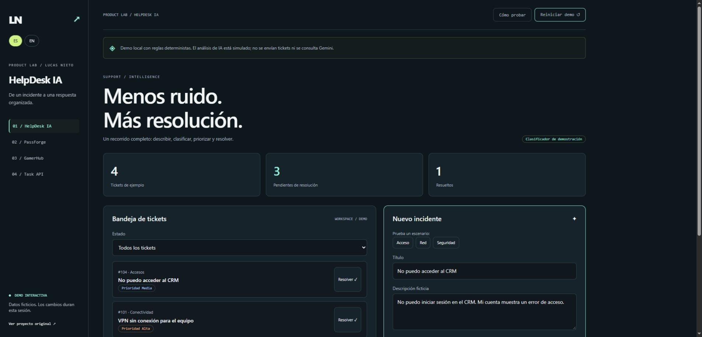
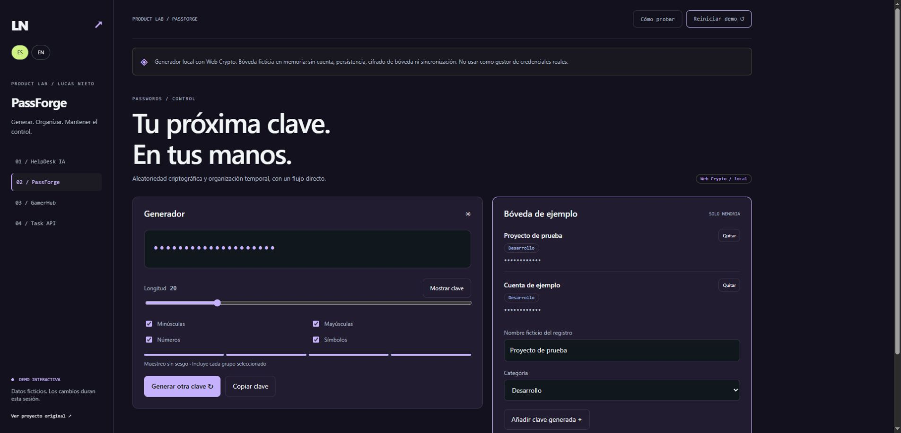
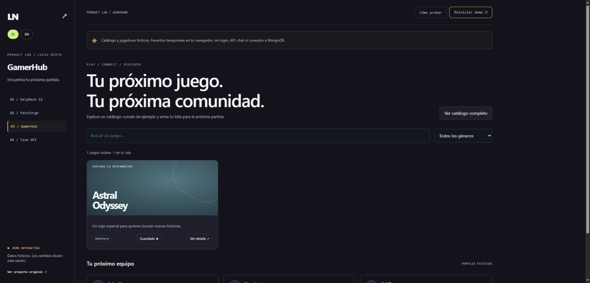

HelpDesk IA
↗De un incidente a una respuesta organizada.
React · Express · Prisma · Gemini
ABIERTO A OPORTUNIDADES
CATAMARCA, ARGENTINA / UTC−3
Soy Lucas. Construyo interfaces, APIs e integraciones.
Elige un proyecto. Pruébalo. Mira cómo está hecho.

01 / SOPORTE CON CRITERIO
Explora el recorrido de soporte: describe un incidente, revisa la clasificación y resuelve el ticket.
React · Express · Prisma · Gemini
Demo de interfaz con datos ficticios. El análisis público usa reglas locales, sin llamadas a Gemini.
DESARROLLO React / Next.js / Node.js / Laravel
EXPERIENCIA Responsable IT en Talking desde 2020
01 / TRABAJO SELECCIONADO
Una demo para probar.
Un caso para entender las decisiones.
De un incidente a una respuesta organizada.
React · Express · Prisma · Gemini

02 / GENERACIÓN / ORGANIZACIÓNUn generador real. Una bóveda de aprendizaje.
Next.js · TypeScript · Prisma · Better Auth

03 / CATÁLOGO / COMUNIDADExplorar, descubrir y guardar tu próxima partida.
React · Express · MongoDB · JWT
Un tablero de tareas para explorar vistas por rol. La demo simula los endpoints; el repositorio muestra la implementación Laravel.
Demos independientes de los backends originales. Cada aplicación explica su alcance.
Todos los repositorios ↗02 / EXPERIENCIA EN OPERACIÓN
Responsable de IT 2020 — ACTUALIDAD
Talking América S.R.L. · Catamarca
Desarrollo herramientas internas, integro APIs y automatizo reportes. También trabajo con servicios Linux, Docker y Nginx: entiendo el recorrido desde una pantalla hasta su operación.
Proyectos profesionalesIntranet corporativa y sistema para un estudio jurídico. Podemos conversar sobre mi participación y las decisiones técnicas en una entrevista.
Técnico Superior en Programación · Diplomatura en desarrollo web full stack
03 / SIGUIENTE CONVERSACIÓN
¿Buscas un developer para tu equipo?
Cuéntame sobre el puesto y qué necesitan construir.